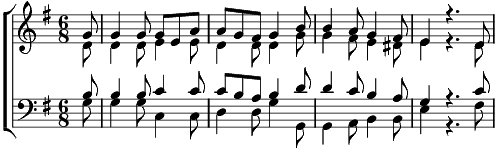

1. Noch lag die Schöpfung formlos da, nach heiligem Bericht:
Da sprach der Herr: Es werde Licht! Er sprach's und es ward Licht.
Und Leben regt und reget sich, und Ordnung tritt hervor.
Und überall, allüberall, tönt Preis und Dank empor.
2. Der Mensch auch lag in Geistesnacht, erstarrt von dunklem Wahn;
Der Heiland kam, und es ward Licht! Und heller Tag brach an.
Und seiner Lehre heilger Strahl weckt Leben nah und fern;
und alle Herzen pochen Dank und preisen Gott den Herrn, und preisen Gott den Herrn.